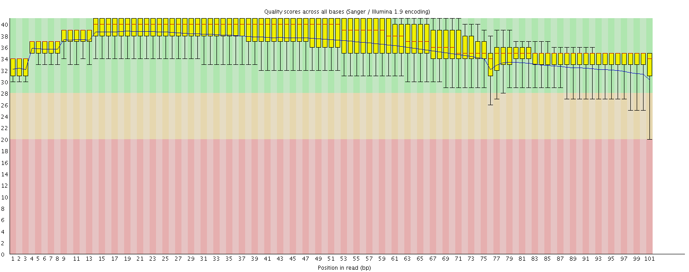
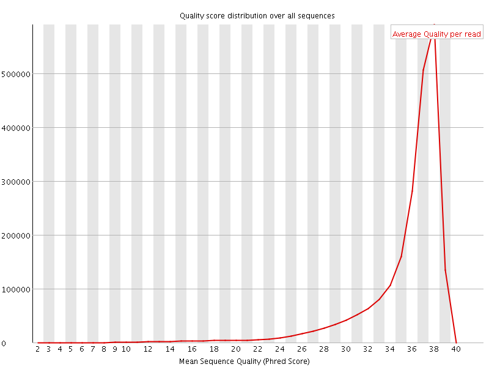
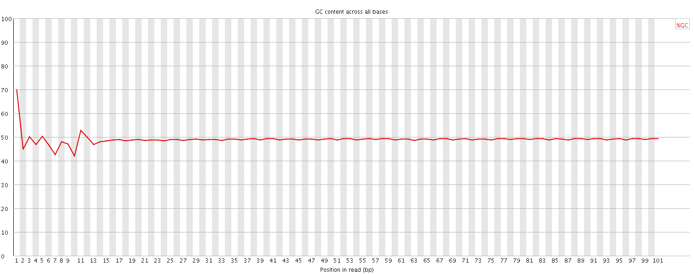
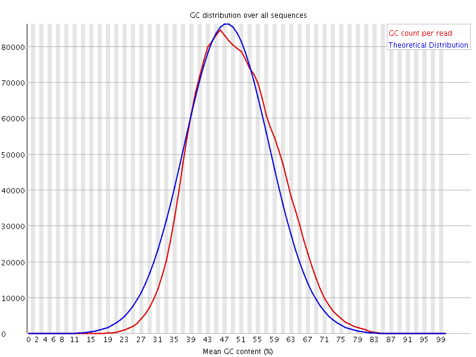
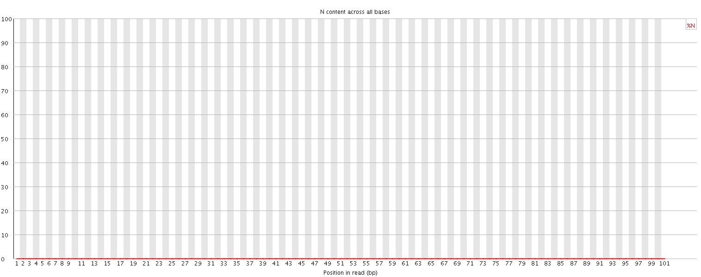
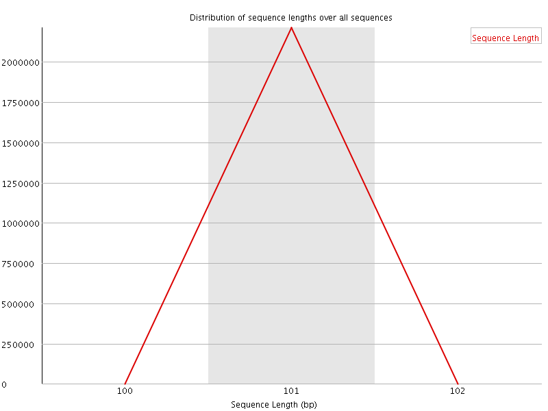
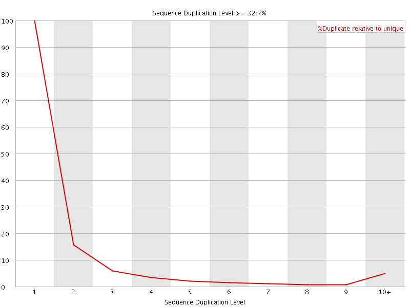
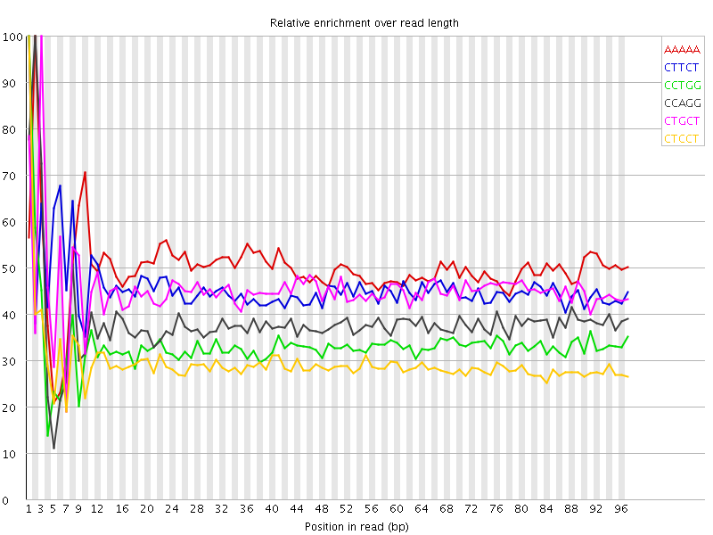

![[OK]](Icons/tick.png) Basic Statistics
Basic Statistics
| Measure | Value |
|---|---|
| Filename | mock_t24_3_GTTTCG_L005_R1_001.fastq.gz |
| File type | Conventional base calls |
| Encoding | Sanger / Illumina 1.9 |
| Total Sequences | 2211833 |
| Filtered Sequences | 0 |
| Sequence length | 101 |
| %GC | 49 |
Per base sequence quality

Per sequence quality scores

![[FAIL]](Icons/error.png) Per base sequence content
Per base sequence content

Per base GC content

Per sequence GC content

Per base N content

Sequence Length Distribution

![[WARN]](Icons/warning.png) Sequence Duplication Levels
Sequence Duplication Levels

Overrepresented sequences
No overrepresented sequences
Kmer Content

| Sequence | Count | Obs/Exp Overall | Obs/Exp Max | Max Obs/Exp Position |
|---|---|---|---|---|
| AAAAA | 626360 | 2.8573468 | 5.721168 | 2 |
| CTTCT | 573295 | 2.520699 | 5.505283 | 1 |
| CCTGG | 482995 | 2.4039319 | 7.187985 | 1 |
| CCAGG | 473365 | 2.3854578 | 6.2394114 | 2 |
| CTGCT | 500285 | 2.3403387 | 5.149965 | 3 |
| CTCCT | 504360 | 2.2458236 | 7.6361284 | 1 |
| CAGCT | 467180 | 2.212797 | 5.1775994 | 3 |
| CTTCA | 493615 | 2.1974916 | 5.686415 | 1 |
| CCCAG | 457645 | 2.1952202 | 9.298729 | 1 |
| TCCAG | 458015 | 2.1693866 | 6.3238373 | 2 |
| CCTCC | 467285 | 2.1072156 | 5.1453304 | 1 |
| TCCTG | 441565 | 2.065646 | 5.0161114 | 2 |
| CTCCA | 455480 | 2.0535269 | 7.9874954 | 1 |
| CTTCC | 449335 | 2.000807 | 5.0158663 | 1 |
| GCCAG | 384205 | 1.9361482 | 6.145959 | 1 |
| CTCTG | 407745 | 1.9074355 | 7.3482995 | 1 |
| CCAGA | 380760 | 1.8260163 | 5.3144307 | 2 |
| CCCTG | 374725 | 1.7752763 | 6.2788887 | 1 |
| CTCAG | 372780 | 1.7656713 | 6.424557 | 1 |
| CTTTG | 375640 | 1.7351656 | 5.375862 | 1 |
| CCCCA | 354960 | 1.6206999 | 5.796632 | 1 |